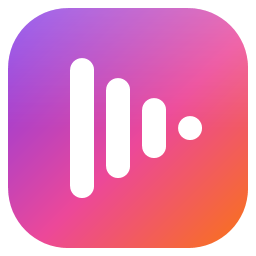
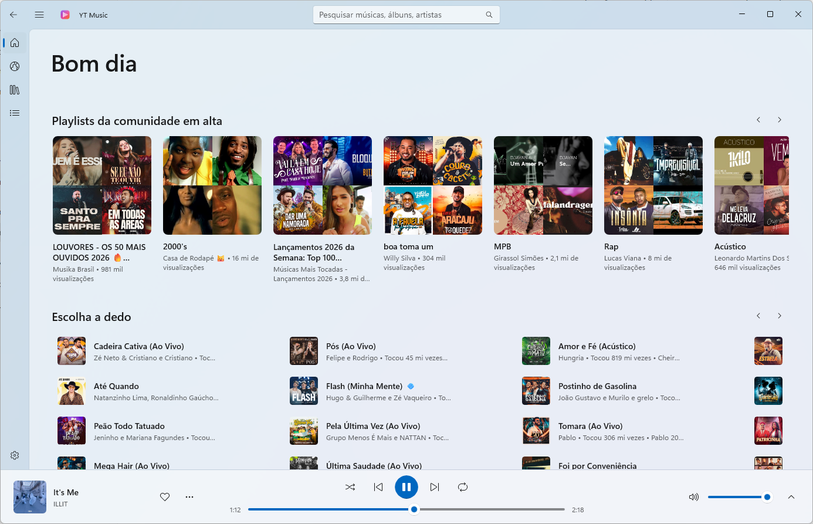
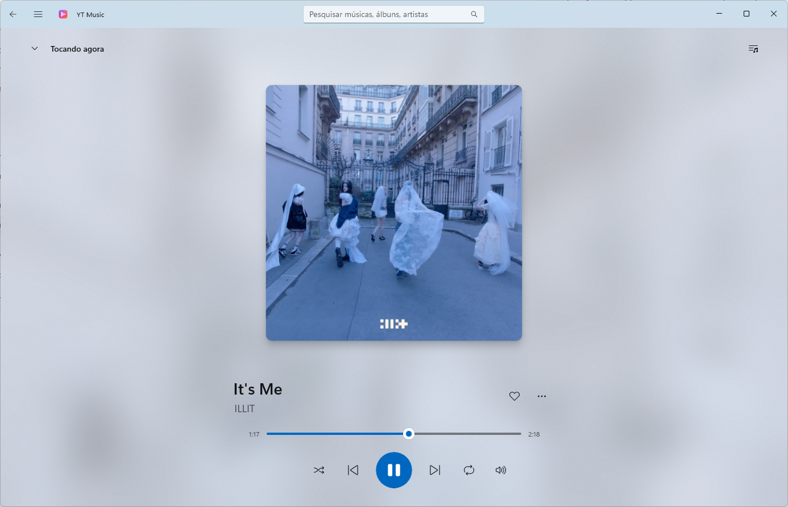
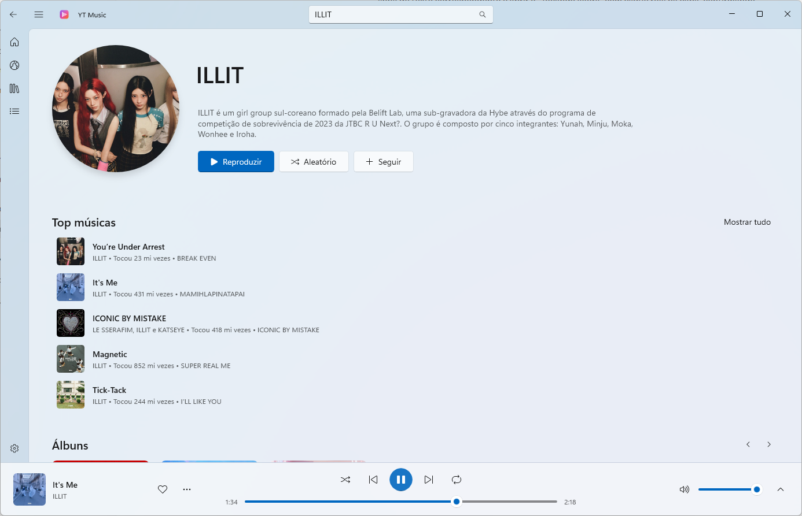
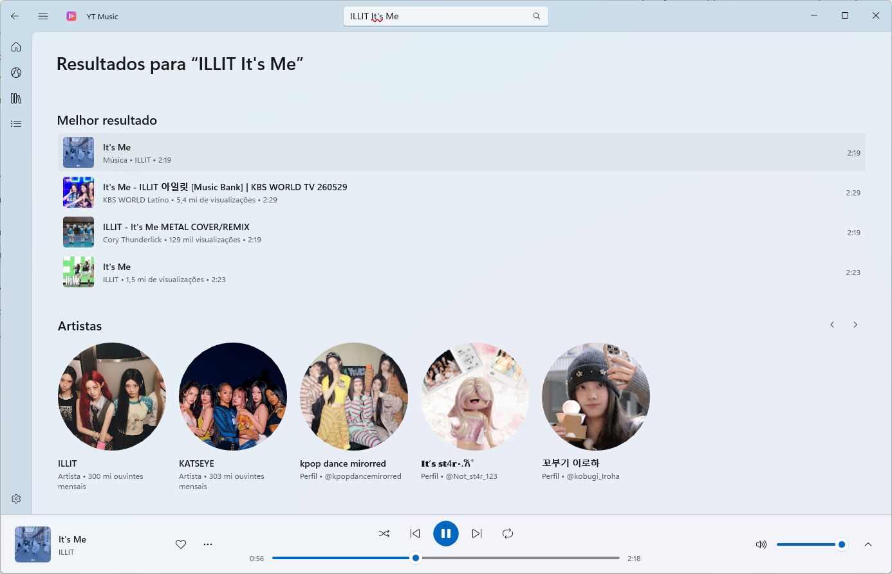
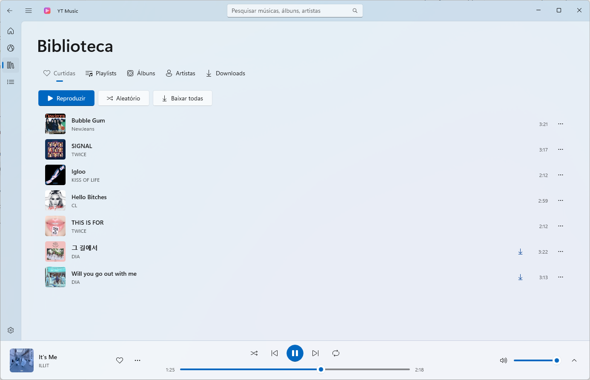
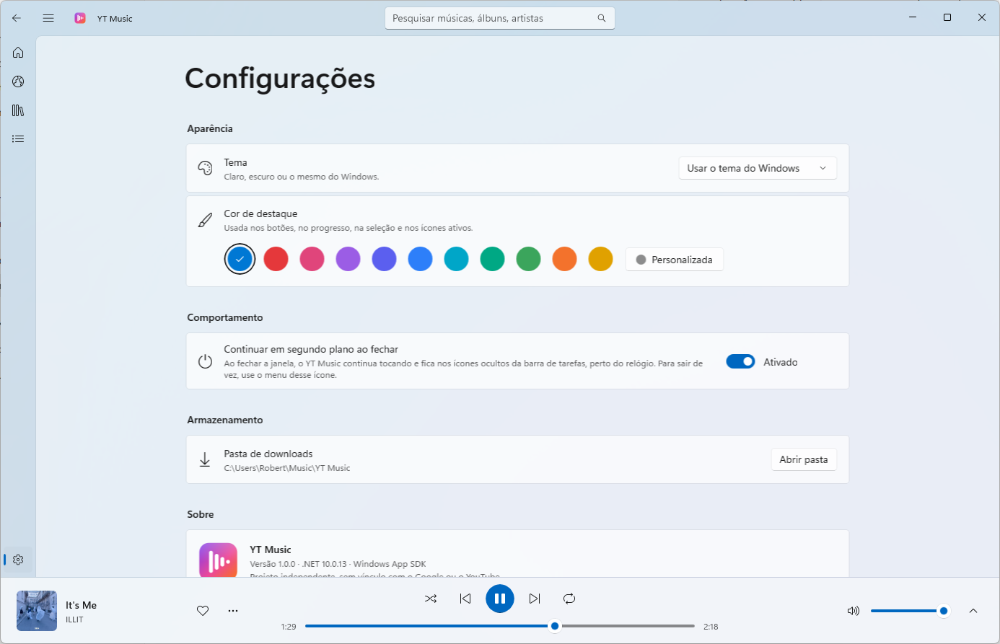

Playback
- The YouTube Music catalog in high quality
- "Now playing" screen with large artwork
- Automatic radio and a reorderable queue
- Resumes where you left off, even after a reboot

YT MusicA light, beautiful player for Windows 11 and 10: stream the YouTube Music catalog, build your library, create playlists and download songs to listen offline.

Built with WinUI 3 and Fluent Design, with smooth animations and deep Windows integration. The interface is in Portuguese.
A clean, modern and fast interface.





Now playing: large artwork over its own blurred backdrop, with like, queue and volume at hand.
Nothing else to install: everything the app needs is included.
YTMusic-Setup-x64.msi installer with the button above or from the releases page.Seeing "Windows protected your PC"? The installer isn't signed with a paid certificate. Click More info → Run anyway.
Yes, completely free and ad-free.
No. Likes, playlists and settings are stored on your computer.
Downloaded songs play offline. Searching and streaming the rest of the catalog needs an internet connection.
Download the new version and install it over the old one. Your library and downloads are kept.
Windows 11 or Windows 10 (version 2004 or later), 64-bit.